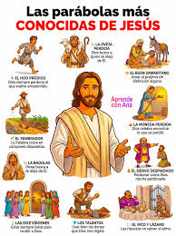

Texto
1. DATOS DE IDENTIFICACIÓN DEL PROYECTO
FICHA DE IDENTIFICACIÓN
Título del proyecto

Centro de interés / TemáticaLas parábolas de Jesús y su aplicación a la vida cotidiana del alumnado
Materia
Religión Evangélica
Nivel educativo
2.º ESO (Educación Secundaria Obligatoria)
Temporalización
4 semanas (aprox. 8 sesiones de 55 minutos)
Idioma
Español
Autor: Brian Bojanowski
Centro educativo: IES Llanes
Curso escolar
2024-2025
2. DESCRIPCIÓN GENERAL DE LA SITUACIÓN DE APRENDIZAJE
Esta Situación de Aprendizaje (SdA) propone al alumnado de 2.º de ESO un reto de indagación y creación: descubrir el mensaje de las parábolas de Jesús y explorar cómo ese mensaje puede iluminar situaciones reales de su vida cotidiana. El proyecto parte de la lectura y comprensión de textos bíblicos para llegar, de forma creativa y colaborativa, a un producto digital que comunique ese aprendizaje.
El alumnado trabajará en equipo para analizar una parábola asignada, investigar su contexto, identificar su enseñanza central y conectarla con una situación real del entorno del alumnado. El producto final consistirá en una presentación digital elaborada con herramientas como Canva (incluyendo el uso guiado de su función de Inteligencia Artificial) o Google Slides, que será expuesta al resto de la clase.
¿Qué aprenderá y trabajará el alumnado?
Comprensión lectora bíblica: leer, analizar y comprender textos del Evangelio en su contexto histórico-cultural.
Pensamiento crítico y reflexivo: identificar el mensaje central de una parábola y conectarlo con dilemas éticos actuales.
Competencia digital: utilizar herramientas de presentación digital (Canva, Google Slides) y nociones básicas de prompts con IA para diseñar contenido visual.
Trabajo cooperativo: asumir roles y responsabilidades dentro del equipo, respetando los distintos ritmos de aprendizaje.
Comunicación oral: exponer el trabajo ante el grupo de forma clara y argumentada.
Creatividad y transferencia: trasladar un mensaje bíblico a un lenguaje visual contemporáneo accesible para otros jóvenes.
Parábolas propuestas (selección orientativa)
La Oveja Perdida (Lucas 15:1-7)
El Hijo Pródigo (Lucas 15:11-32)
El Buen Samaritano (Lucas 10:25-37)
Los Talentos (Mateo 25:14-30)
El Sembrador (Marcos 4:1-20)
3. JUSTIFICACIÓN DE LA PROPUESTA
La presente SdA surge directamente de las conclusiones obtenidas en la Rutina de Pensamiento (Modelo de Gibbs) elaborada en la Tarea 1.1, en la que se reflexionó sobre una actividad previa realizada con alumnado de 2.º de ESO en la asignatura de Religión Evangélica. A continuación se justifica cada elemento de la propuesta en base a dicha reflexión:
Centro de interés: Las parábolas de Jesús
La experiencia previa demostró que el estudio de las parábolas —en particular la de la Oveja Perdida— generó implicación real en el alumnado. El hecho de conectar el texto bíblico con la vida cotidiana actuó como detonante motivacional. Mantener esta temática y ampliarla a varias parábolas garantiza continuidad curricular y aprovecha el interés ya despertado.
Nivel: 2.º ESO
El grupo de 2.º de ESO es conocido por el docente, que ya ha establecido una relación de confianza con el alumnado. La reflexión señaló que esa confianza facilita que el alumnado pregunte cuando tiene dudas y colabore. Mantener el nivel permite capitalizar ese vínculo.
Temporalización ampliada (4 semanas / 8 sesiones)
Uno de los aprendizajes clave de la experiencia anterior fue la necesidad de ampliar el tiempo disponible y de anticipar mejor las dificultades técnicas. Con 2 semanas resultó ajustado; se proponen ahora 4 semanas para incluir una fase de preparación técnica y otra de ensayo antes de la exposición, reduciendo la presión de tiempo y mejorando la fluidez del trabajo.
Herramientas digitales y uso guiado de la IA
La Rutina de Pensamiento identificó que el alumnado desconoce funciones básicas (Ctrl+C / Ctrl+V) y que necesita más apoyo inicial en el uso de herramientas. Esta SdA incorpora una sesión introductoria específica de alfabetización digital y una guía paso a paso para el uso de Canva y su función de IA (redacción de prompts), abordando directamente la debilidad detectada.
Trabajo cooperativo con roles definidos
La experiencia mostró que los distintos ritmos del alumnado pueden dificultar el trabajo en equipo. Al ser un grupo reducido (3 alumnos en el caso anterior), la asignación de roles claros (coordinador, redactor, diseñador) permite que cada uno contribuya desde sus puntos fuertes y avance a su propio ritmo sin bloquear al equipo.
Materia: Religión Evangélica
La SdA se enmarca en el currículo de Religión Evangélica, conectando los saberes básicos de la asignatura (texto bíblico, mensaje cristiano, valores evangélicos) con las competencias clave del perfil de salida del alumnado, especialmente la competencia digital y la competencia personal, social y de aprender a aprender.
Diseño Universal para el Aprendizaje (DUA)
La reflexión destacó que cada alumno sigue un ritmo diferente y que el acompañamiento cercano —tanto motivacional como técnico— es lo que mejor funciona. La SdA incorpora múltiples medios de representación (vídeo, texto, presentación oral), de acción y expresión (digital, oral, visual) y de implicación (elección de parábola, libertad creativa en el diseño), respondiendo así a la diversidad del aula.
4. ESTRUCTURA Y FASES DE LA SITUACIÓN DE APRENDIZAJE
FASE 1 · Semana 1 · Sesiones 1-2 | MOTIVACIÓN Y COMPRENSIÓN DEL TEXTO
Presentación del reto. Lectura guiada de las parábolas. Lluvia de ideas sobre su significado. Introducción básica a Canva y Google Slides (atajos de teclado, funciones esenciales).
FASE 2 · Semana 2 · Sesiones 3-4 | INVESTIGACIÓN Y DISEÑO
Investigación en internet sobre el contexto histórico de la parábola elegida. Conexión con situaciones cotidianas. Inicio del diseño de la presentación. Uso guiado de la IA de Canva (elaboración del prompt).
FASE 3 · Semana 3 · Sesiones 5-6 | ELABORACIÓN DEL PRODUCTO DIGITAL
Desarrollo y maquetación completa de la presentación. Revisión por pares. Ajustes de contenido y diseño. Ensayo de la exposición.
FASE 4 · Semana 4 · Sesiones 7-8 | EXPOSICIÓN Y EVALUACIÓN
Exposición oral del trabajo al grupo. Coevaluación con rúbrica. Reflexión final: ¿qué aprendí? ¿cómo lo usaría en mi vida?
5. INDICADORES DEL MARCO DE REFERENCIA DE COMPETENCIA DIGITAL
Indicador 1.3.B2.4
Descripción
Diseña estrategias para gestionar la incertidumbre derivada de la planificación de prácticas transformadoras perfiladas tras el análisis.
Aplicación en la SdA
La SdA incorpora una fase de preparación técnica (Sesiones 1-2) que anticipa las dificultades detectadas en la experiencia previa, gestionando la incertidumbre antes de que aparezca.
Indicador 1.4.B2.1
Descripción
Adapta los conocimientos y experiencias, intercambiados en comunidades profesionales en línea y/o actividades formativas presenciales sobre el uso de las tecnologías digitales y evalúa su puesta en práctica.
Aplicación en la SdA
El diseño de la SdA aplica directamente los aprendizajes adquiridos en esta formación B2 y los contrasta con la experiencia real de aula documentada en la Rutina de Pensamiento.
Indicador 2.2.B2.1
Descripción
Crea, de forma individual o en colaboración con otros, nuevas unidades y secuencias de aprendizaje a partir de la integración de contenidos digitales diversos.
Aplicación en la SdA
La SdA integra texto bíblico, investigación web, herramientas de diseño digital (Canva con IA, Google Slides) y exposición oral en una secuencia coherente adaptada al contexto del aula.
6. NOTA SOBRE EL PRODUCTO FINAL (eXeLearning)
Este documento constituye la Tarea 2.1 del curso de formación B2 de Competencia Digital Docente. Sus contenidos serán incorporados posteriormente al producto final elaborado con la herramienta eXeLearning, junto con los demás elementos exigidos (protección de datos, curación de contenidos, línea temporal, criterios e instrumentos de evaluación), de acuerdo con las instrucciones del curso.
La Rutina de Pensamiento (Tarea 1.1) no se incluye en este documento, pero ha servido como base reflexiva para justificar cada una de las decisiones de diseño recogidas en el apartado 3 de este documento.